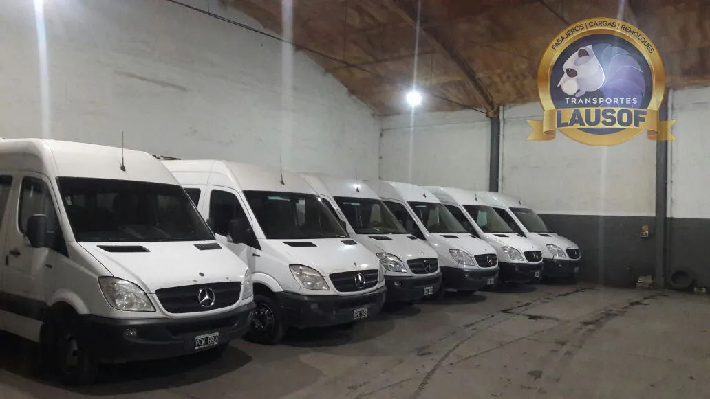
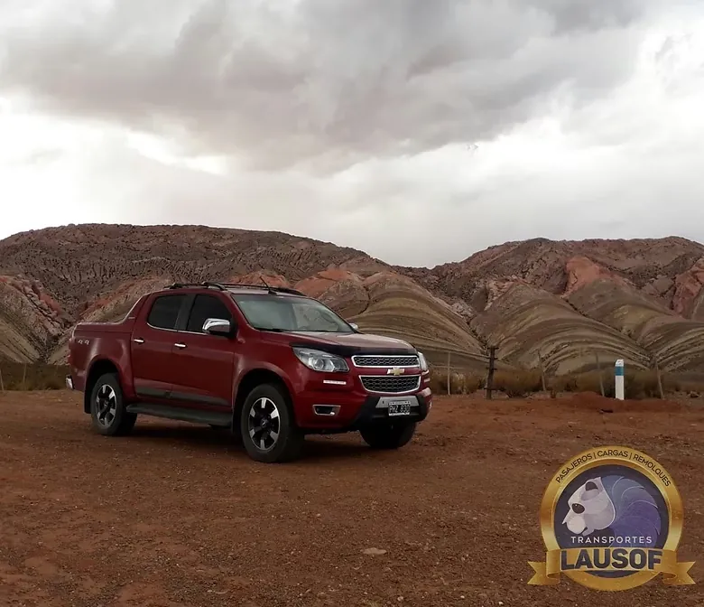

San Pedro de Atacama, Chile
Unos 590 km por Purmamarca, Salinas Grandes y el Paso de Jama, a 4.200 m. Un día completo de viaje, todo asfaltado. El paso puede cerrar por nieve, en invierno y en verano.
Salta – San Pedro de Atacama →
Viajes internacionales
Además de los circuitos de Salta y Jujuy, hacemos viajes internacionales por tierra: a Chile, a Bolivia y a otros destinos que nos pidan. Van en combis de 19+1 plazas o camionetas 4x4 con chofer profesional, solo ida o ida y vuelta, y el permiso de viaje internacional de la unidad lo tramitamos nosotros.
Destinos
Unos 590 km por Purmamarca, Salinas Grandes y el Paso de Jama, a 4.200 m. Un día completo de viaje, todo asfaltado. El paso puede cerrar por nieve, en invierno y en verano.
Salta – San Pedro de Atacama →
Unos 690 km por la Quebrada de Humahuaca, La Quiaca–Villazón y Tupiza. Lo recomendamos en dos días. Uyuni está a unos 3.650 m.
Salta – Uyuni →
Otras ciudades de Chile o de Bolivia, viajes que combinan los dos países, o el destino que necesite su grupo. Díganos a dónde va y lo armamos.
Consultar un destino →Cómo funciona
Fuentes oficiales, consultadas el 10/10/2026: viajes ocasionales al exterior (CNRT), pasos internacionales y su estado y requisitos y documentación por país.
Quiénes somos. Lausof SRL es una empresa familiar de transporte de Salta. Hacemos transporte de pasajeros desde 2010, con habilitación CNRT N.º 60284. Conozca la empresa.
Relacionados: Turismo en Salta y Jujuy · Combis a recitales y festivales · Alquiler de camionetas 4x4
Actualizado el 10/10/2026.
Envíenos el destino, la fecha, cuántos viajan, dónde los buscamos y si es solo ida o ida y vuelta. Le respondemos con la cotización en el día.
Cotizar por WhatsApp